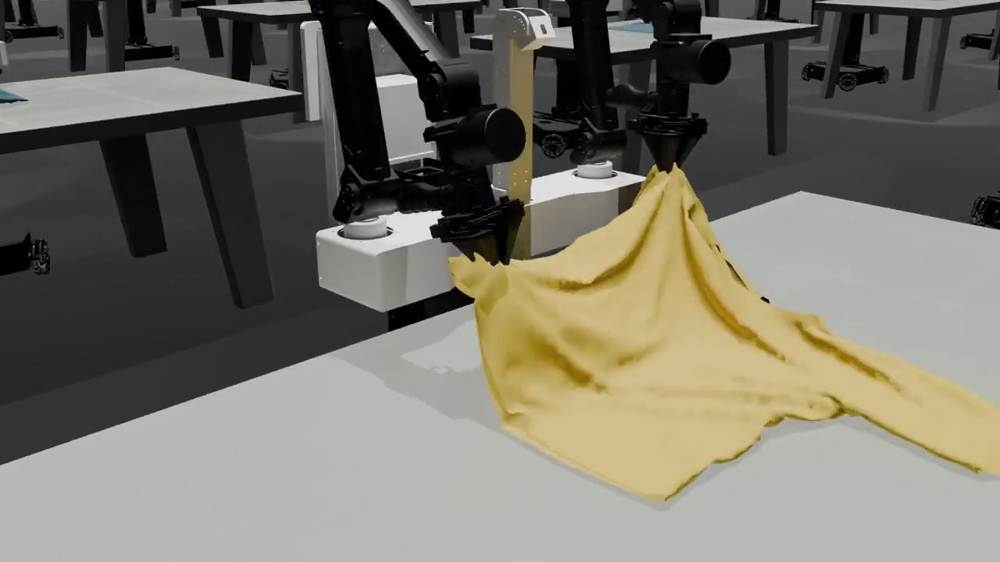

万殊智能 · 研究成果
核心团队的
代表性研究
这里汇集核心成员参与的八项公开研究，覆盖三维感知、Real-to-Sim、接触仿真、仿真数据、力觉控制与物理评测。
8 项公开成果 · 2024—2026 · 论文、项目主页与公开视频

代表性成果
八项公开研究
以下成果均已公开，可从论文和项目主页查看完整内容。
说明
关于这些成果
本页汇总核心团队成员参与的公开研究。论文、作者及发表信息以原文为准，视频均来自论文或项目官方页面。
公开论文用于说明团队能力，不自动等同于万殊智能的产品或知识产权。公司产品与商业化方案以融资 BP 为准。